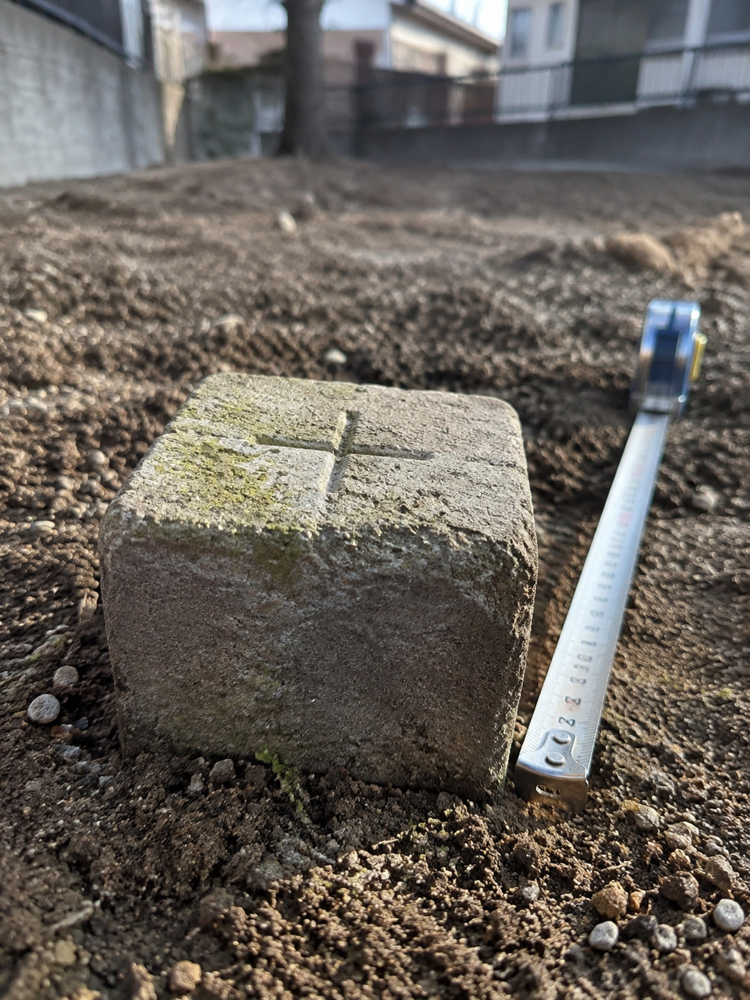
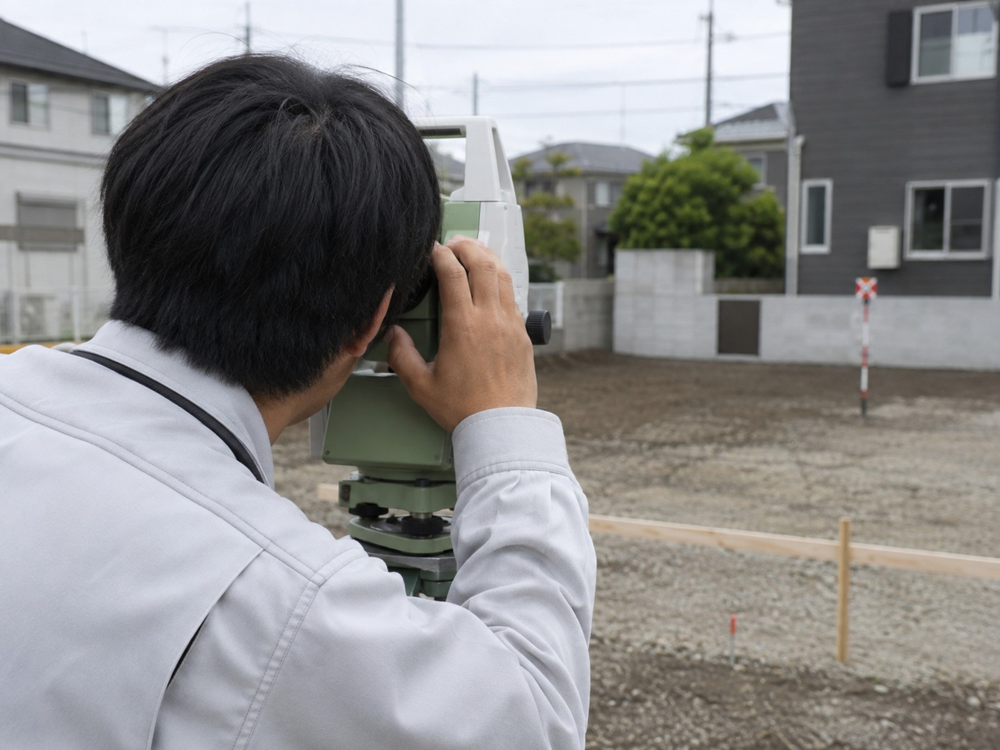
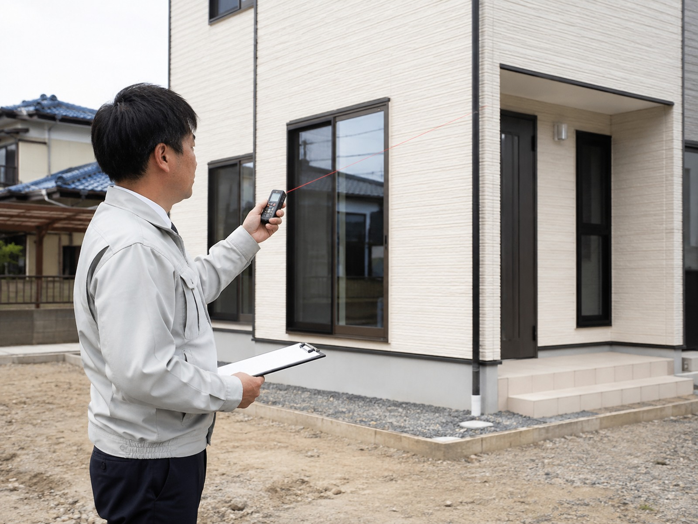
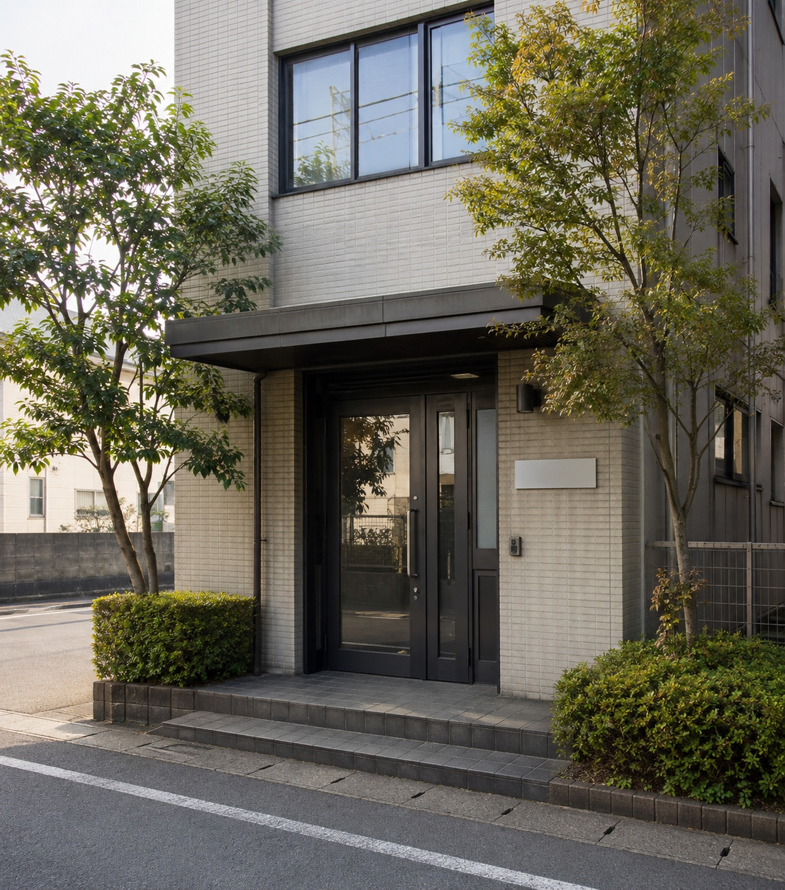
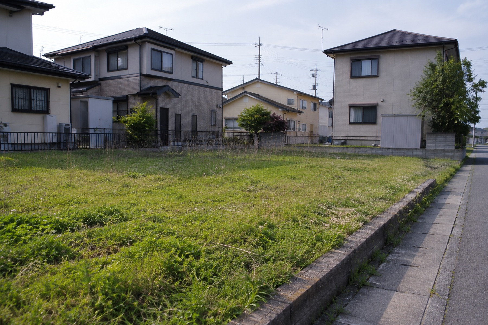
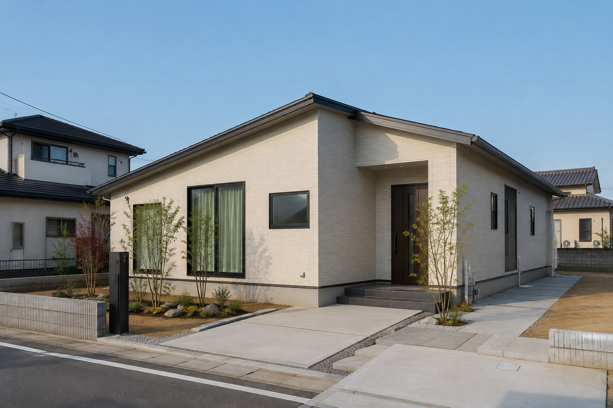
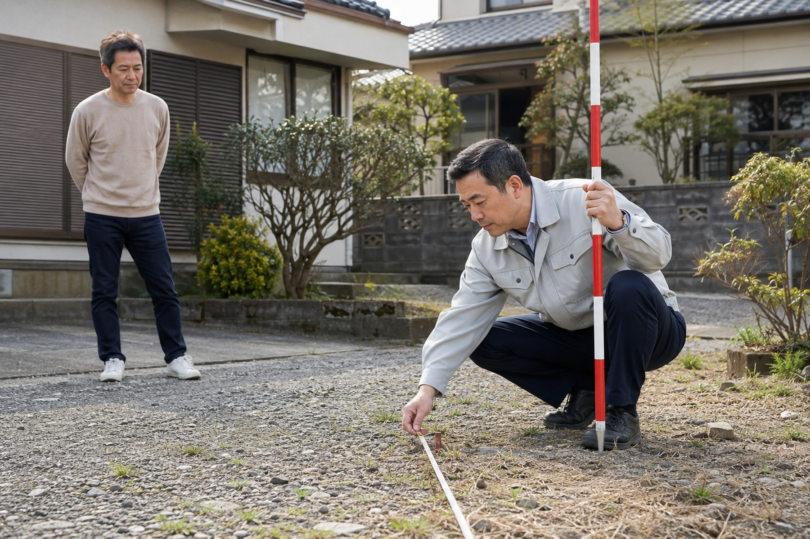

境界確認・測量
売却・相続・分筆の前に
くわしく見る本サイトはWebサイト制作のご提案を目的とした非公式デモサイトです。実在する事務所の公式サイトではありません。
お問い合わせへ移動 DEMO 貴社サイトの試作案／制作：Koizumi Web Studio
土地・建物の状況を伺い、必要な手続きを整理します。
相談内容を伝える山口孝夫土地家屋調査士事務所
売却・相続・分筆の前に
くわしく見る分筆・合筆・地積更正・地目変更
くわしく見る新築・増築・滅失・区分
くわしく見る状況に応じた解決方法をご案内
くわしく見る土地の売却・相続・分筆の前に必要になる、土地の現況と境界を確認するための測量です。隣接地の所有者の立会いをお願いする場合があります。

土地の分け方・まとめ方や、登記簿の記載と実際が違う場合の手続きです。相続・売買・土地活用の場面で必要になります。
建物を新築・増築・解体したとき、また区分建物（マンション等）に関する登記です。融資や売買の前提となることがあります。

隣地との境界がはっきりしない、話がまとまらない。そうした場合の進め方を、状況に応じてご案内します。
取扱業務の登録番号・対応内容の詳細はヒアリング後に掲載

代表者の経歴・登録番号はヒアリング後に掲載
郡山市麓山を拠点に、土地・建物の調査と登記に向き合います。専門用語をできるだけ使わず、状況と選択肢を順序立ててご説明します。
土地や建物の登記・境界に関するご相談は、状況によって必要な手続きが異なります。よくいただくご相談のケースをご紹介します。



土地の形状・隣接地・必要な手続きにより異なるため、内容確認後にご案内します。
郡山市を中心に、近隣地域のご相談も内容に応じて承ります。詳しい対応地域はお問い合わせください。
アクセス必要な手続きがまだ分からなくても構いません。
お話を伺い、次に何を確認すべきか整理します。
受付時間はヒアリング後に掲載
下記のフォームからもご相談いただけます。内容を確認のうえ、折り返しご連絡します。お急ぎの場合はお電話が確実です。
これはデモサイトです。送信ボタンを押しても実際には送信されません。本番サイトでは、この内容が事務所へ届く仕組みを実装します。
本文